Roadmap
Newest at the top, oldest at the bottom. Major and minor releases sit on the trunk; patch releases branch off. Future versions are bold guesses against the Platform Rollout phasing — themes are committed, dates and order will shift.
- OAuth / Sign in with Apple for the hosted relay · Relay wiki — bearer-token model is forward-compatible.
- End-to-end encryption · Relay wiki — relay becomes a relay of opaque blobs; mutually exclusive with server-generated APNs payloads.
- Linux desktop tray · reincarnates #179 — macOS quality bar met; revisit embedded-daemon vs relay.
- Windows 11 desktop · reincarnates #180 — tray app + WebView2 popover.
- Hosted relay beta at
relay.irrlicht.app· Relay wiki — same binary, public URL, auth-on-by-default.
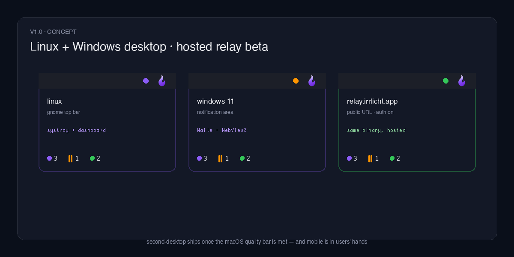
- Android client · Platform Rollout Phase 5 — Kotlin / Compose, FCM via the relay's
push_provider. - watchOS companion · Platform Rollout §6 — glanceable working/waiting/ready counts; trivial once
IrrlichtCoreexists. - StandBy / Live Activities tile on iOS · Platform Rollout §6 — aggregated status on the lock screen.
- macOS WidgetKit · reincarnates #254 — overlay design now settled; widget reads the shared snapshot.
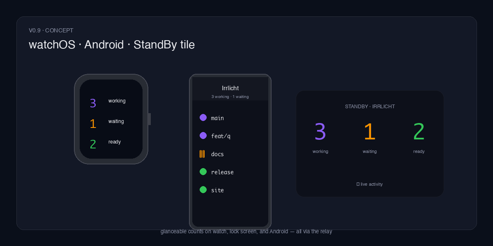
- iOS companion app via the relay · reincarnates #112 — SwiftUI app, APNs via the relay's
push_provider. - iPadOS adaptive layout · Platform Rollout Phase 4 — master/detail on iPad, same target as iOS.
IrrlichtCoreSwift package · Platform Rollout Phase 3 — shared models / SessionStream / reconnect / notification logic extracted fromplatforms/macos/.
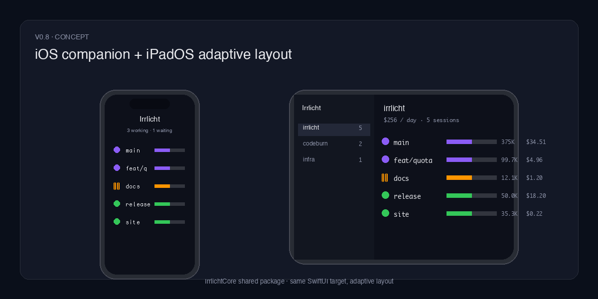
- Relay v0 completes — macOS multi-source UI · Relay wiki — bearer-token auth,
SessionStreamrefactor, Settings → Relay Servers pane (wiki phases 4–6). The user-visible payoff of v0.5's foundation: aggregate laptop + remote-box + VM sessions into one list with source badges. Unblocks iOS in v0.8. Phase 7 LAN-direct mode for Tailscale users ships alongside.
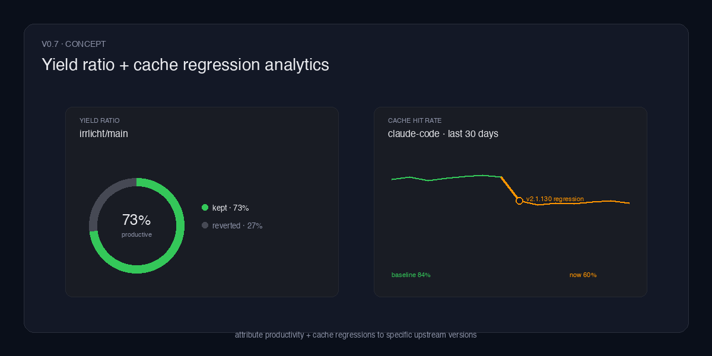
- VS Code panel hosting the dashboard · #350 — thin extension webview; Cursor / Windsurf inherit it for free.
- Claude Code Agent View as an orchestrator · #312 — new orchestrator alongside Gas Town and the inline-subagent path; carried over from the v0.5 cycle.
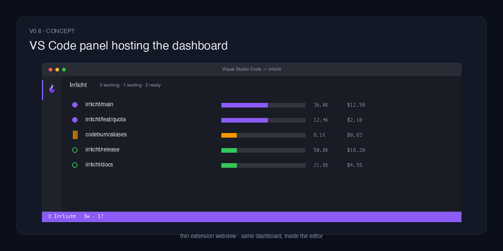
A correctness sweep across session discovery and state. A parent session no longer wedges at working forever once it has spawned a background subagent #1098 — v0.5.8’s guard could never release, because Claude Code writes a zero count as absence rather than an explicit 0. Three agents whose session root is relocated by an env var or config key are no longer silently invisible: Vibe’s $VIBE_HOME #1108 and [session_logging].save_dir #1123, and Kiro CLI’s KIRO_HOME #1074. The transcript tailer now detects a file rewritten in place, not just one that shrank #1120.
- Mistral Vibe agent adapter · #921 — state, model, context, cost, summaries, and backchannel control for
vibesessions, plus a full 44-cell onboarding column. - Activity Matrix lands on macOS · #1038 — the projects × time grid shipped web-only in v0.5.7 is now a top-level History tab in the app, with nine zoom granularities and CSV/JSON export.
A long sweep of session-lifecycle correctness: a parent no longer flips to ready while a background subagent is still running #1037; a session’s swallowed first turn is synthesized on late or child discovery #1010; backchannel state is re-keyed across presession reconciliation so control is not silently lost #1007; and non-Claude adapters stop falling back to Claude’s model config #1022.
- Activity Matrix chart in History · #986 — a projects × time-bucket grid of working/waiting/ready agent counts, zoomable across nine granularities from 1 minute to 1 year.
- DORA metrics in History · #959 — Deployment Frequency, Lead Time for Changes, Change Failure Rate, and MTTR as a new Metrics section on both macOS and web.
- CO2 equivalent reference lines on the CO2 chart · #955 — reference lines at the height of relatable everyday CO2e equivalents, plus a CO2 Methodology docs page.
Question and waiting-cue detection now understands German, Spanish, French, and Portuguese, not just English #939; WCAG-AA contrast failures in summary/question pills fixed on macOS and web #987; a recurring family of -race test flakes, root-caused to a session-repository aliasing bug, closed out for good #976.
- Subscription quota in the menu bar status icon · #917 — the status icon can render your 5h/7d quota windows directly, as stacked bars or a compact ring, with Lights/Usage/Combined styles and a per-provider picker.
Sessions with a still-active background child no longer flip to ready mid-turn #893 #899, nor when a transcript moves into or out of a git worktree #878; long background-research subagents no longer falsely time out #882; the CO2 estimate no longer wraps to a second line #922; closed every open CodeQL alert and the remaining SonarQube security/reliability findings from the project-wide code-health sweep #894 #896 #910 #912 #913; install.sh no longer kills unrelated daemons on the machine #876.
- Estimated CO2 footprint alongside cost · #831 — click a session's cost figure to cycle to an estimated CO2e footprint, with a tooltip disclosing how confident the number is.
- Cache-regression badge explains itself · #826 — the badge now shows which agent version caused the regression, with a plain-language explanation on hover instead of a bare icon.
History's Model grouping fixed #793 and its tab switcher moved into the header #788; the menu bar app recovers from a stuck local-daemon or relay reconnect #845 #848 and no longer double-counts relay-echoed sessions #830; “Expand All Task Summaries” persists across restarts #800; Antigravity’s non-interactive host poller no longer shows as a phantom session #791; FocusMonitor’s remaining macOS 26 crash path closed #790; subagents are reaped after transcript deletion #850; a fragile SwiftPM resource-bundle dependency removed #847.
- History view with spend analytics · #752 — a cost-analytics surface for both macOS and the web dashboard: cumulative spend with a linear projection, project/branch/provider/model attribution and drill-downs, a concurrent-agents timeline, a productive-vs-reverted yield ratio, faceted cross-filtering, and CSV/JSON export.
- Backchannel that acts on your agents · #731 — control discovered agents locally or remotely, across agents and terminal backends; event→action rules, agent-translated command presets, and a Custom command.
- Plain-language session summaries · #770 — rows lead with a human-readable intent block and the exact waiting-question, built from lightweight markers with a pluggable compaction step.
ETA accuracy improvements surfaced sooner #768; a built-in diagnostics bundle (/debug/bundle + --diagnose) #742; cache-creation regression detection #749; a generic GUI-host fallback for click-to-focus #741; ghost sessions age out / get reaped #740 #734; the Settings panel no longer janks #730; a TTS crash fixed #781; a macOS 26 / Xcode 26 SDK launch crash fixed #782; non-Anthropic-frontend sessions price correctly (codeburn alias sync) #726.
- Google Antigravity support · #715 — one adapter covers both the
agyCLI and the Antigravity IDE; transcript-first discovery makes PID-less IDE sessions first-class. - Publish to relay · #718 — a macOS toggle that streams this daemon’s sessions out to a standalone relay (works behind NAT); the forwarder hot-reloads so toggling Publish or editing the URL/token applies to the running daemon with no relaunch #722.
Relay native multi-tenant workspace isolation #709; the Antigravity context bar renders (tokens read from the sibling conversation store) #719; Claude Code sessions stay “waiting” across a daemon restart #706; the brand flame gradient is legible on light backgrounds #708.
- Gemini CLI adapter · #668 — eighth coding-agent backend (alpha): live working/waiting/ready state from Gemini’s
~/.gemini/tmpJSONL transcripts, nested subagent chats, and per-turn token deltas. - ~3× less CPU under heavy load · #693 — macOS WebSocket refreshes are coalesced into one redraw per ~100ms window; measured ~100% → ~31% of a core under 40 agents.
- Configurable context-pressure alert · #692 — set the context-fill alert as a percentage (default 80%) or an absolute token count, in a tidied settings panel with an Advanced Settings group and Beta badges.
/ir:doc-review documentation-audit skill #698; dead sessions age out correctly (no-op refresh no longer bumps updated_at) #684; manual /compact shows the full working→ready lifecycle #658; the installer downloads + verifies before removing the old build #654; release DMGs are codesigned before notarization #652.
Session rows stop lying: /compact no longer strands sessions in “working” #642; Claude Code 2.1.168’s background-daemon processes no longer mint permanent ghost rows (and old ghosts are retired on upgrade) #648; sibling-bound ghost pre-sessions are swept continuously #646; the startup-race “?” agent icon heals itself #647; daemon restarts can no longer resurrect idle sessions as “working” (ledger schema v4) #650.
- Consent-first permission wizard · #570 — every read and modification irrlicht performs is a declared per-agent permission behind explicit consent; nothing is exercised until granted, and revoking actively undoes (hooks uninstall, watchers stop).
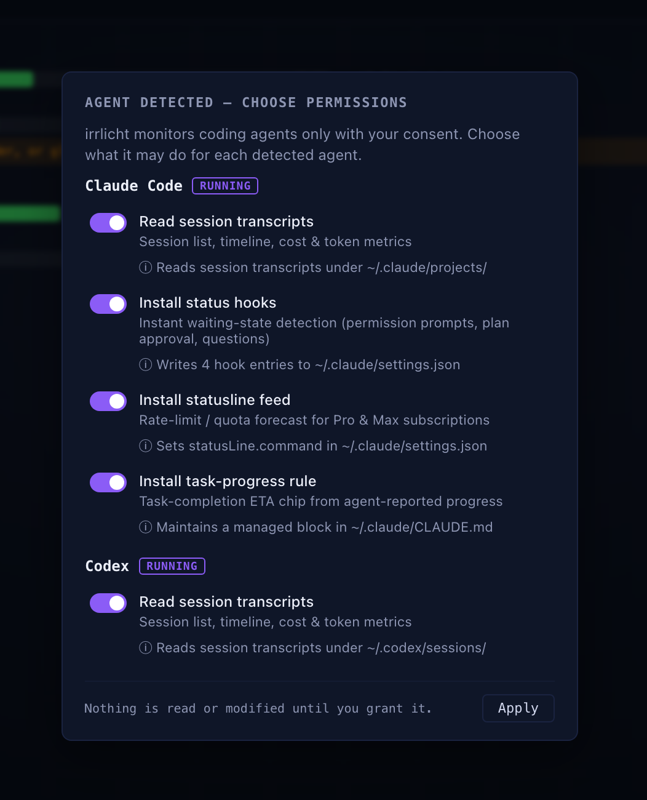
- Task-completion ETA chip · #558 — the agent self-reports progress via a hidden in-band marker; web + macOS show a “~9m left” chip that degrades honestly when reports go stale.
- Kiro CLI adapter · #280 — seventh coding-agent backend: live state, PID binding, todo-list task progress, and model + context metrics from Kiro’s session sidecar.
irrlicht-lsdashboard parity, in the default install · #554 — hierarchy, cost/context/adapter columns, filters,--format json; PKG symlinks it into/usr/local/bin.
Eyed-flame mark lands everywhere #594; menu-bar attention icon for pending permissions #607; Gas Town event-driven polling kills a CPU spike #575 + unified rig/role/cost display #560; stale subagent badges fixed via Seq-gap re-hydration #601, #637; macOS login item self-heals on every launch #563.
- Remote session relay —
irrlichtrelay· #547 — a standalone binary that aggregates every machine’s sessions into one macOS app + web view, secured with TLS/wss, bearer-token auth, an origin allowlist, and per-IP / per-connection caps.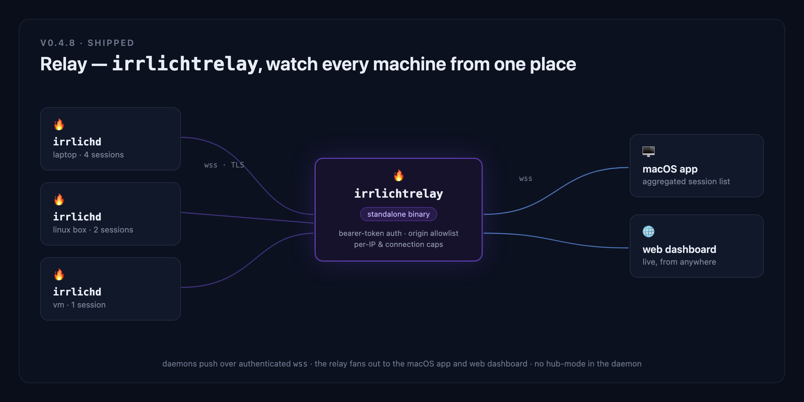
- Linux daemon · #482 —
irrlichdbuilds and runs on Linux (amd64 + arm64) behind a portableProcessObserverseam; samecurl … | shinstall.
Per-provider windowed usage spend + subscription empty-state #441; OpenCode inherits OpenAI rate limits via JWT account_id #424; backgrounded Bash processes hold a session working #450, #452; claudecode permission prompts surface as waiting #490; codex turn_aborted settles interrupted turns #464; 22 new frontend pricing aliases synced from codeburn; editable relay URL + token in macOS Settings #550; web dashboard split into three files #418; onboarding-factory rewrite — of CLI as sole replaydata/ writer, shard migration, 4-verb skill #514.
- Sparkle 2.x auto-update integration · #413 — in-app update prompts with a signed EdDSA appcast at
irrlicht.io/appcast.xml. First Sparkle-enabled release; v0.4.6 users need one manual upgrade before auto-updates begin. - Developer-ID signed + Apple-notarized DMG · #409 — first launch through curl installer or Homebrew cask no longer trips Gatekeeper; quarantine-strip workarounds removed.
- OpenCode
todowriteas task-progress dots · #410 — dashboard parity with Claude Code’s TaskCreate/TaskUpdate pipeline.
OpenCode working→ready tail latency drops ~2.5 s #412; Claude Code wrapped command preserves user statusLine output #404; curl installer survives GitHub API rate limits #401; get-task-allow removed from production entitlements before notarization #407, #415; /ir:onboard-agent pipeline lands with first-class opencode driver #328, #408; Focus entitlement + DevID codesigning restored #406; coverage-viewer and find-flicker-sessions retired #411, #414; kitty docs clarify full-restart requirement #402.
- Public roadmap page · #395 — chronological newest-at-top timeline at
/docs/roadmap.htmlwith concept tiles for every future release and ALSO SHIPPED roll-call for every past release.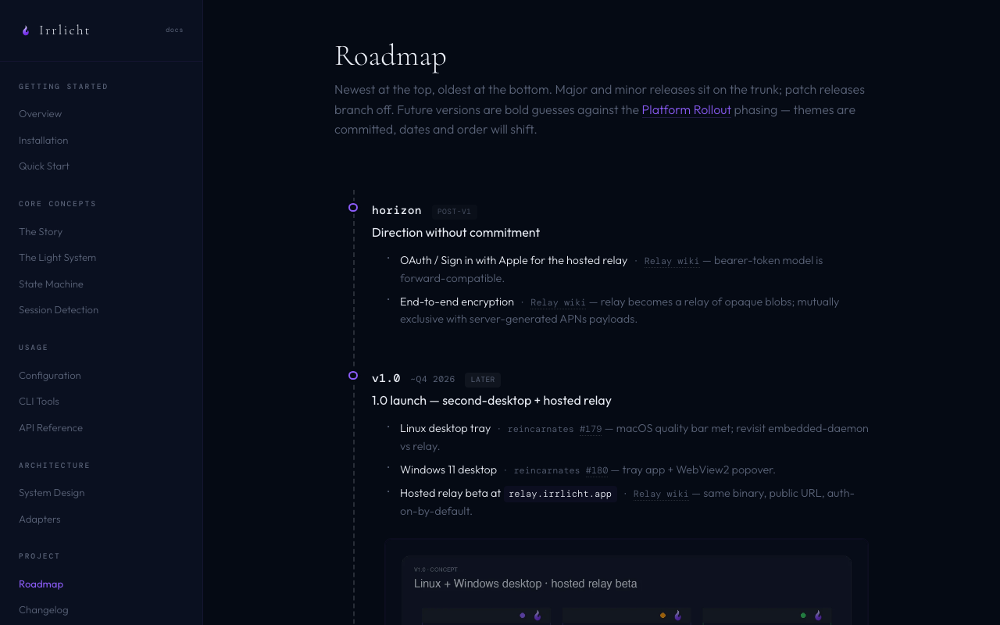
Brand: gradient flame refresh propagates to remaining surfaces (docs sidebar dot, design-system tiles) #394; working-state icon switches to a breathing solid dot #393; web subagent dot-matrix row dropped to match macOS overlay #397; Claude Code task list prunes entries absent from task_reminder snapshots #396.
- Pro / Max subscription burn-rate forecast in the macOS overlay · #309, #379 — stacked 5h/weekly progress bars with linear-projection forecast.
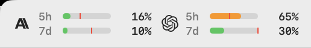
- New gradient flame brand system · #388 — single-path silhouette across app, icon, navbar, design system.
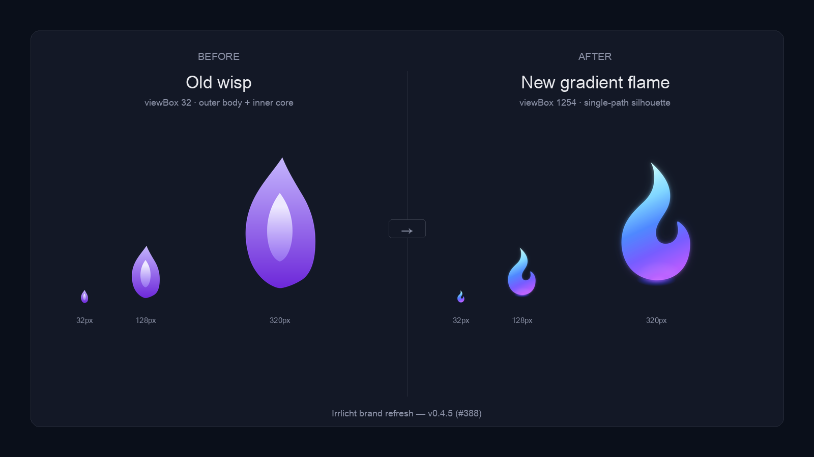
- Unified per-row state icons across web and macOS · #382 — heartbeat halo / pause bars / checkmark, same vocabulary in both surfaces.
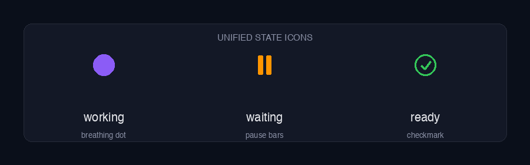
- Web dashboard reaches overlay parity, beta · #354 —
http://127.0.0.1:7837mirrors the macOS overlay row anatomy, header controls, and settings.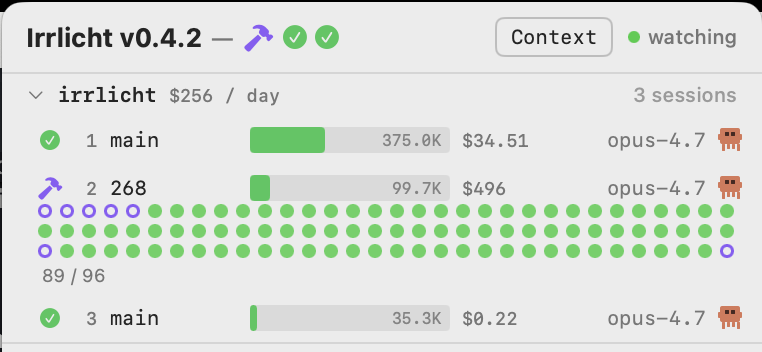
Codex sessions price at real-dollar instead of $0 (split-event token_count attributed to session model) #361; adapters honor agent-CLI env vars for relocated session dirs (#349).
- macOS app autostarts at login · #343 —
SMAppService.mainAppregisters the app on first launch; the menu-bar overlay is up before you open your first terminal.
Click-to-focus follows VS Code / Cursor / Windsurf across macOS Spaces and fullscreen windows #344; daemon no longer kills a neighboring session when two Claude Code instances open in one VS Code window #345.
- macOS overlay aligned with the official design system · #229 — typography, spacing, and color tokens unified with the brand system; foundation the v0.4.5 brand refresh built on.
Drop legacy file-polling path and retire the vaporware IRRLICHT_DISABLED env var; document the four env vars that actually exist (#337).
- Agent-declaration architecture refactor · #159 Phase A — adding a new agent is now a Go-only one-line registration; sealed-sum source type unifies the watcher wiring.
- Per-event notification sound picker · #253 — separate toggle, sound, and preview per ready / waiting / context-pressure event; custom audio import + speak-aloud voice.
OpenCode ghost-session cleanup after upgrade; Homebrew tap kept current on every release #299.
- OpenCode adapter · #255 — first SQLite-backed monitoring path; sets the pattern for non-JSONL agents.
ir:triage skill for diagnostic GitHub-issue triage #283.
Serve stale LiteLLM cache instead of zeroing costs #275; aider stays open across re-prompts under --yes-always #274.
Session history streams over WebSocket (replaces 30s polling) with bit-packed 60-bucket rings #249; daemon serves dashboard from disk so the UI is hot-editable in dev #267.
Sweep zombie sessions on daemon startup #242.
Prune deleted sessions from apiGroups synchronously so the overlay updates immediately instead of after a 30s rehydrate #244.
- Aider adapter shipped · #220, #224 — first agent through the new
/ir:onboard-agentflow; tmux-driven interactive driver, scenario fixtures, trailing-?waiting contract.
Homebrew cask via own tap #187 — brew install --cask irrlicht.
- Menu bar rewritten on NSStatusItem + NSPanel · #196 — eliminates the one-frame background flash on collapse/expand; panel grows downward from the status item.
"…" overflow indicator on the menu-bar icon when more than five project groups are active #193; unified agent registration via agents.Config #199 — foundation for the v0.4 Phase A refactor.
- Agent history bar — per-session state timeline with 1s / 10s / 60s granularity — cycling mode button switches between context display and history; persists across daemon restarts.
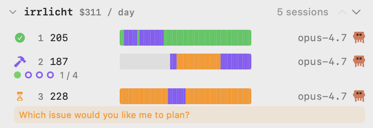
Click-to-focus extends to 17 terminal/IDE hosts (Zed, Rio, Tabby, WaveTerm, Alacritty, Nova, Kitty, JetBrains family, …); Claude Code task-list progress dots in the session row.
- Click-to-focus the launching terminal or IDE · #170 — clicking a session row raises iTerm2 / Terminal.app / VS Code via AX title-matching; ppid-chain host resolution.
Web dashboard renders on initial load (was empty until the 30s rehydrator) #167; project-group reorder chevrons restored #172.
- Per-group cost display with day / week / month / year timeframes · #83, #162 — project headers cycle through cost windows instead of a single hard-coded one.
- LiteLLM as the single source of truth for model context windows + pricing · #165 — hand-maintained capacity table removed; the daemon picks up new models without a restart. 1M context for Sonnet 4.6 lands.
curl | sh installer at irrlicht.io/install.sh; daemon binds localhost-only and rejects cross-origin WebSocket upgrades #94, #155.
- Gas Town full role support with recursive group nesting · #154 — first-class role registry (mayor, deacon, witness, refinery, polecat, scribe, …) instead of ad-hoc strings.
Desktop notifications on macOS state transitions #147.
- Full session lifecycle recording + offline replay harness · #107, #138 —
ir:test-macwrites a sidecar;replayreplays it byte-identically against the production tailer and fails on drift.
Cost display toggle in the macOS menu bar, off by default #130.
- Claude Code session-state flicker eliminated · #102 — four distinct bugs fixed: stale-tool timer, open-tool tracking desync, interrupt-vs-cancel,
stop_reasonallow-list.
Offline replay harness lands — any Claude Code, Codex, or Pi transcript runs through the production tailer + classifier in virtual time; a 500-hour session replays in under a second.
- Dynamic model capacity from LiteLLM — context-window sizes and pricing fetched at daemon startup, replacing hardcoded fallbacks. Sets the stage for v0.3.5's single-source-of-truth lookup.
Reorderable project groups in the macOS popup and menu bar; agent landscape page launches with 63 tracked agents.
- Permission-pending detection · #108 — sessions with non-blocking tool calls awaiting user approval flip to
waitingafter a 5-second stale-tool timeout. New piece of the three-state vocabulary. - Gas Town educational UI — role-hierarchy visualization and active-tool display for orchestrator sessions.
- Per-adapter transcript parsers — each agent owns its own parser; foundation for the v0.4 Phase A refactor.
- Will-o'-the-wisp brand identity lands — macOS app icon plus SVG/PNG favicons across the landing page and docs; SEO metadata (Open Graph, Twitter Card, canonical URL) on every site page.
/ir:release automation skill drives DMG + PKG + universal-binary builds, changelog updates, and GitHub release creation from one command; branded DMG background asset.
- Subagent lifecycle end-to-end — background and foreground subagents detected, tracked, and shown as children with a purple count badge on the parent; cascade cleanup on parent exit.
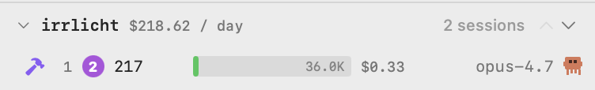
- Hierarchical dashboard API —
GET /api/v1/sessionsreturns Orchestrator → Group → Agent → Children withSubagentSummarycounts.
PID-discovery retry with backoff (500ms, 1s, 2s) plus CWD fallback resolves multi-instance race.
- Embedded daemon in app bundle · closes #35 —
Irrlicht.appships as a single artifact with both SwiftUI UI and the Go daemon;DaemonManagerspawns, monitors, and restarts it with exponential backoff. No separate LaunchAgents.
Idle ready sessions auto-delete after 30 minutes (configurable); dark-forest landing hero with floating wisps animation.
- UI state icons land — hammer (working) / hourglass (waiting) / checkmark (ready) replace the earlier dot-only menu-bar rows. Same vocabulary survived through v0.4.5's unified-state-icons milestone.
Session persistence across daemon restarts (sessions kept as ready instead of deleted); worktree awareness via git-common-dir; MCP tool detection prevents browser-automation tools from flipping state to waiting.
- Codex adapter shipped — first agent beyond Claude Code; recursive directory watching, transcript parsing, model + token extraction.
- Cost estimation with per-model pricing — estimated session cost shown per session and aggregated per project group.
How this page is maintained
Hand-edited as part of /ir:release. When a release ships, its row moves from the future section down across the "today" line into the past, and any closed-deferred items reincarnate when their wiki gates lift. The version dates and themes in the future section are bold guesses; the issue and wiki links are the source of truth.
If an item here looks stale relative to its linked issue, the issue wins — file a bug.